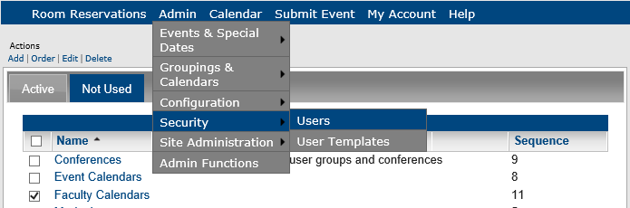
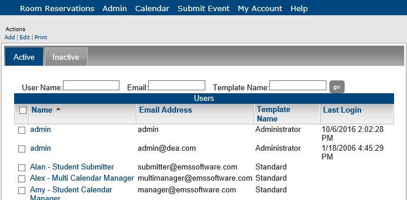
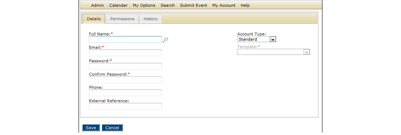
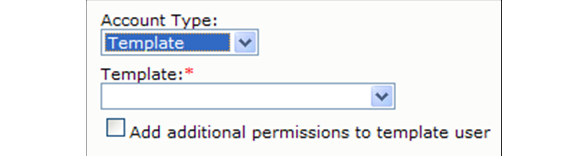
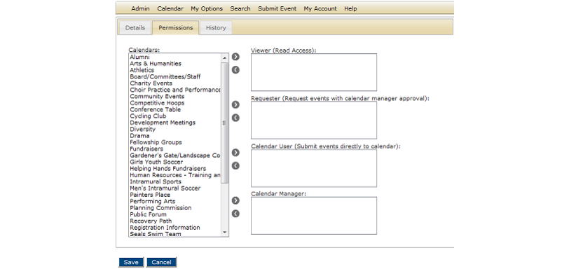
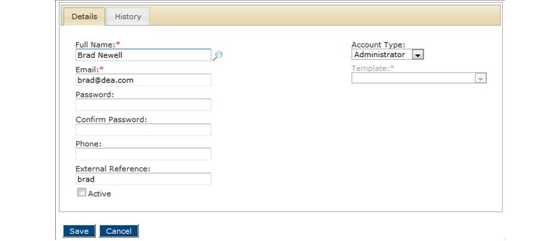
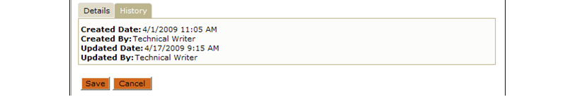

Managing Users
A user in Master Calendar is anyone who can log in to Master Calendar and who has a predefined level of access to specific calendars. For example, User A has requestor access to Calendar A, and view only access to Calendar B, User B has view only access to all calendars in Master Calendar, and so on. The user’s record that you define specifies this level of access. This topic guides you in searching for users, creating new ones, and working with existing ones.
Searching For a User
1. On the Admin menu, point to Security > Users.

The Users page open, on the Active tab, which lists all currently active users in Master Calendar.

 | Tips: The Inactive tab lists all inactive users in EMS Master Calendar. You may find the user on either tab. Use the Print option to generate a report list of all users configured in Master Calender, which you can export as a PDF (default), Xls, Xlsx, Rtf, Mnt, Text, Image, or Csv. |
2. Use the search fields at the top of the tab (User Name, Email, Template Name), enter partial or complete search criteria, and then click Go.The search is limited to the exact order of characters in the search string, however, the string is not-case sensitive and it can appear anywhere in the search results. For example, if you enter “Rob” as your search string for User Name, search results can include Robert, Rob, Robertson, Jarrob, and so on. A list of all users that meets the search criteria is displayed on the tab.
Creating a New Master Calendar User
1. From Step 1 (above), click Add. The Details window opens, where you can add the information about the user.

 | Note: If your organization has purchased the optional Integrated Authentication module, a Lookup icon shows next to the Full Name field. Click this icon to open a list of users in your EMS system and automatically populate these fields. |
3. Add the information for the new user.
| Details Fields |
| Field | Description |
| Full Name | The full name for the user. |
| Email | The email address for the user. |
| Password | The login password for the user. Note: The password does not have any special rules. |
| Confirm Password | Re-enter the password exactly as you entered it in the Password field. |
| Phone | The phone number for the user. |
| External Reference | Required only if you have LDAP security. Used to enable single sign-on through the separately purchased Integrated Authentication module. |
4. Select the account type for the user - Standard, Template or Administrator.
| User Types |
| User Type | Description |
| Standard | This is the default value for a user type. You must manually apply permissions for this type of user. |
| Template | Note: This type of user is available only if you have active templates defined in Master Calendar. See Managing User Templates. If you select this type of user: • The Permission tab is initially removed from the page. • A Template dropdown list opens. You use this list to select the correct template for the user’s permissions.  • Optionally, if you want to add permissions for the user in addition to the ones that are defined by the selected template, select Add additional permissions to template user to make the Permissions tab available again. |
| Administrator | This type of user has full access to all calendars in Master Calendar as well as to all system areas and functions. |
5. Do one of the following:
• If the user is an administrator, or a template user who does not have additional permissions, click Save. The user is saved as an active user in Master Calendar.
• If the user is standard user, continue to Defining User Permissions.
Defining User Permissions
6. Click the Permissions tab, which lists all currently active calendars in Master Calendar.

7. To indicate the type of access the user will have to the calendars in Master Calendar, select the calendar (CTRL-click to select multiple calendars), and then click the appropriate Add button to move the calendars to the access type.
| Calendar Access Type Fields |
| Field | Description |
| Viewer | The user can only view events on the calendar. |
| Requester | The user can view events on the calendar and submit events to the calendar; however, the submitted event is posted only if the Calendar Manager approves it. |
| Calendar User | The user can view events on the calendar and submit events to the calendar and the events are automatically posted without approval by the Calendar Manager. |
| Calendar Manager | The user can carry out all administration functions for the calendar (edit the calendar, create calender URLs, submit events to the calendar without approval, add/edit/delete special dates, and so on.) |
 | Warning:If you do not select a calendar for the user, the calendar is considered to be a private calendar—the user cannot view events on the calendar, submit events to the calendar, and so on. |
8. Click Save. The user is saved as an active user in Master Calendar.
Working With Existing Users
1. From Step 1 (above), select the Active or Inactive tab and select the user you wish to work with and click Edit. The Details tab opens.

| Tips:Use the Active option to control whether the user is active or inactive in Master Calendar. You can only Delete inactive users, so to delete a user from Master Calendar entirely, first set them to Inactive, and then on the Inactive tab you can select the user and click the Delete option. You can view history on a user by clicking the History tab.  |
2. Edit the information as needed for the user.
3. If needed, edit the user's permissions on the Permissions tab, and update the type of access the user will have to the calendars in Master Calendar, select the calendar (CTRL-click to select multiple calendars), and then click the appropriate Add button to move the calendars to the access type.
4. Click Save to save your changes.
Page tags: article:topic